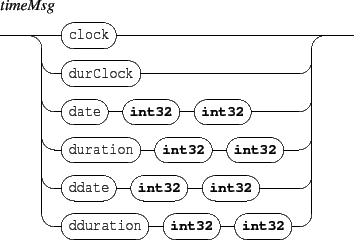

Next: 6. The 'set' message
Up: INScore OSC Messages Reference
Previous: 4.4 The 'click' and
Contents
Index
5. Time management messages
Time messages control the time dimension if the score components. They could be sent to any address with the form /ITL/scene/identifier where identifier is the unique identifier string of a scene component.

- clock: a clock message similar to MIDI clock message: advances the object date by 1/24 of quarter note.
- durClock: a clock message applied to duration: increases the object duration by 1/24 of quarter note.
- date: sets the time position of an object. Time is expressed as a rational value d/n where n represents the whole note division and d the divisions count. The parameters order is numerator followed by denominator.
Default value is 0/1.
- duration: changes the object duration. Duration is expressed as a rational value.
Default value is 0/1.
- ddate: relative time positioning message: adds the specified value to the object date.
- ddate: relative duration message: adds the specified value to the object duration.
Next: 6. The 'set' message
Up: INScore OSC Messages Reference
Previous: 4.4 The 'click' and
Contents
Index
Grame - Interlude project [ANR-08-CORD-010]